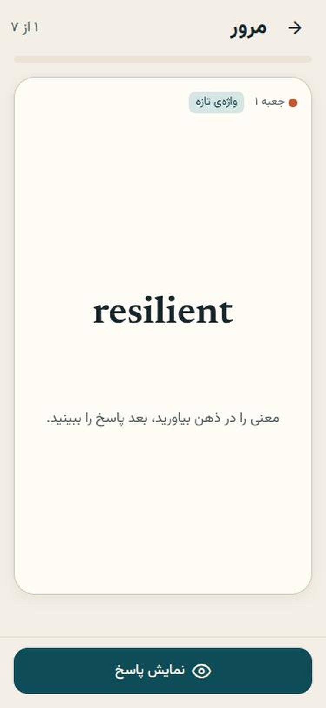
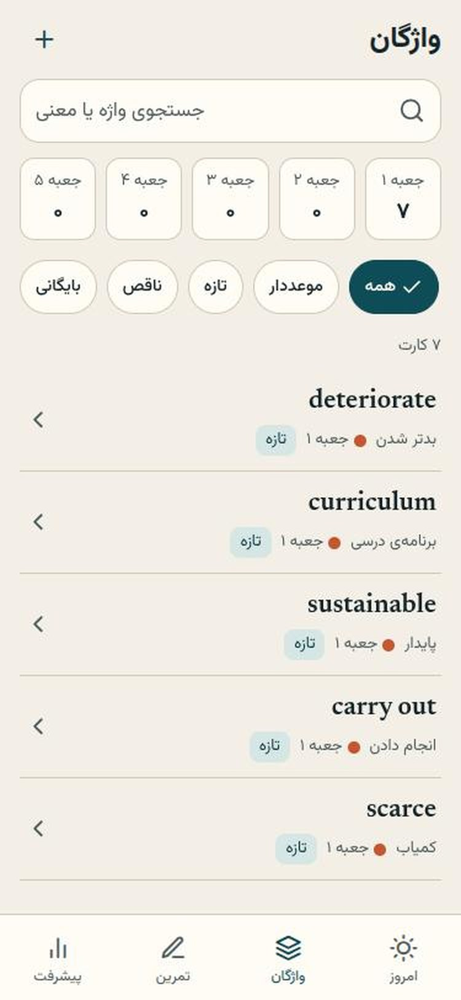

لایتنر آیلتس
اپ فارسی برای حفظ واژگان آیلتس با پنج جعبهی لایتنر. هر واژه با جمله و معنی ذخیره میشود، بهموقع برمیگردد، و همهچیز روی گوشی خودتان میماند.
A Persian-first IELTS vocabulary app built around a five-box Leitner system. Offline, local-first, optional AI with your own key.
نگاه کوتاه
تصویرها از خود برنامه گرفته شدهاند.


امتحانش کنید
همینجا در مرورگر اجرا میشود؛ دادههایتان فقط در همین مرورگر میماند.
چه کار میکند
کوچک و متمرکز؛ مرور روزانه، نه یک داشبورد شلوغ.
پنج جعبهی لایتنر
پاسخ درست یک جعبه بالا میرود (۱، ۲، ۴، ۸، ۱۶ روز). پاسخ نادرست به جعبهی ۱ برمیگردد. نتیجه فقط بعد از انتخاب خودتان ثبت میشود.
آفلاین و محلی
هر کاربر دیتابیس خودش را روی گوشی دارد. مرور و کتابخانه بدون اینترنت کار میکنند. پشتیبان JSON بگیرید و برگردانید.
یادگیری در بافت
جمله، تلفظ، همنشینها و خانوادهی واژه. افزودن دستی، فهرست چندتایی یا استخراج از متن انگلیسی.
تمرین چهار مهارت
خواندن، شنیدن (املا)، نوشتن و پاسخ گفتاری متنی؛ بازخورد نوشتن آموزشی است نه نمرهی رسمی آیلتس.
هوش مصنوعی اختیاری
در تنظیمات کلید API خودتان را وصل کنید (Anthropic یا سازگار با OpenAI). کلید فقط روی گوشی شما میماند و مستقیم به همان ارائهدهنده میرود.
راستچین واقعی
رابط فارسی با متن انگلیسی چپبهراست درست کنارش، تم روشن و تیره.
نصب روی اندروید
- فایل
leitner-ielts.apkرا دانلود کنید. - اگر اندروید پرسید، نصب از «منبع ناشناس» را برای مرورگر یا فایلمنیجر مجاز کنید.
- فایل را باز کنید و نصب را بزنید.
این برنامه از فروشگاه نیست و با کلید اختصاصی خود پروژه امضا شده است. میتوانید SHA-256 فایل را در صفحهی نسخهها با فایل دانلودشده مقایسه کنید. نسخهی iOS ندارد؛ نسخهی وب روی هر دستگاهی کار میکند.